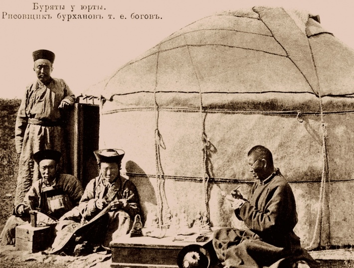
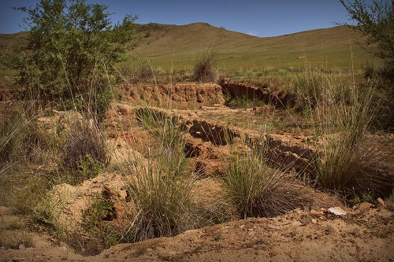
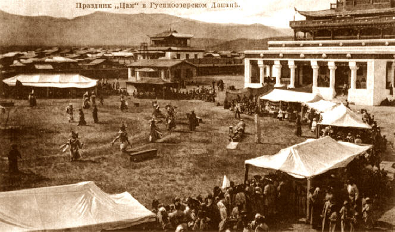

ДО Н.Э
Территория, прилегающая с востока к озеру Байкал, с глубокой древности является составной частью Центрально-Азиатской
историко-культурной области. Забайкалье в течение тысячелетий входило в орбиту грандиозных исторических событий,
происходивших на Евразийском континенте. Заселение этой территории людьми шло в эпоху среднего палеолита
(150 тыс. лет назад) из двух ареалов: один поток шел с юго-востока Азии, второй с юго-запада.
К концу среднего палеолита здесь завершился процесс образования рас.
В эпоху неолита географический ландшафт, флора и фауна территории обрели современный вид. Каменный век сменился веком
бронзы, а потом веком железа. Археологами здесь обнаружено большое количество находок, в том числе погребений, оставленных
племенами, известных науке как культура плиточных могил. Известна в Забайкалье культура херексуров и оленных камней,
а также скифо-сибирская культура. К этому же времени относится существование нефритового пути, по которому изделия из нефрита везли с востока на запад.

ГОСУДАРСТВО ХУННУ
Одним из переломных этапов в истории Евразии стал 3 век до нашей эры, когда на территории
Центральной Азии с центром в Монголии была создано первое кочевое государство Хунну. С этого времени
Центральная Азия на многие века превратилась в своеобразное горнило, в котором в войнах формировалась
кочевая цивилизация, а волны нашествий кочевников распространялись далеко на запад и на восток. Войны с
Китаем привели к ослаблению хунну и их вытеснению из Центральной Азии.
ВЕЛИКАЯ СТЕПЬ
После ухода хунну в Европу, произошедшего в эпоху великого переселения народов, на этой территории на протяжении
тысячелетия возникали и разрушались многочисленные племенные объединения и новые государственные образования кочевников.
Самые крупные из них государство Сяньби, Жужанский каганат, Великий тюркский каганат, Уйгурское ханство, Киргизский каганат,
стремились овладеть огромными
пространствами Евразии и подчинить себе соседние племена.
Тогда же возникло новое географическое
и политическое понятие - Великая степь.

МОНГОЛЬСКАЯ ИМПЕРИЯ
Это продолжалось до 1206 года, когда все основные монгольские племена были объединены Чингисханом.
Была издана Книга запретов ("Яса-наме"), которая представляла собой своеобразный общегосударственный кодекс степного
народа.
Озеро Байкал и территория современной Бурятии относились к легендарной стране Баргуджин-токум, бывшей в составе
коренного улуса кочевого государства монголов. Баргуджин-токум была объявлена Чингисханом заповедной землей предков,
был издан "Их хориг". Здесь он совершил свои первые военные походы против меркитов, после чего началась эпоха великих
монгольских завоеваний, завершившаяся созданием самой большой в истории человечества империи. Кочевники создали
цивилизацию, которая не только вела войны, но и передавала от народа к народу достижения их культур, объединяла их в общих
границах, став в итоге создателем единой евразийской цивилизации.
После распада империи монгольское государство, раздираемое феодальными раздорами, продолжало существовать вплоть до 16 века.
Племена, кочевавшие в Забайкалье и Предбайкалье, всегда оставались в его составе. Ко времени монгольского государства
относятся первые сведения о народе, по названию которого позже была названа эта часть территории Забайкалья. Этот народ
назывался буряты, а территория получила название Бурятия. К этому же времени относятся сведения о народе курыкан,
потомками которых стали современные эвенки.

ИСТОРИЯ БУРЯТИИ
После Октябрьской революции 1917 года, произошедшей в России, процесс интеграции Забайкалья и Дальнего востока в составе
России шел очень интенсивно. Здесь в 1920 году с центром в Верхнеудинске была создана Дальне-Восточная Республика. В 1923
году была образована Бурят-Монгольская Автономная Советская Социалистическая Республика. В 1958 году Монголия стала
независимым государством. В связи с реорганизацией административного устройства Восточно-Сибирского края в 1937 году
из состава республики был выведен ряд районов, и на их основе созданы два бурятских автономных округа, вошедших в
состав соседних с Бурятией административных областей: Агинский национальный округ в составе Читинской области и
Усть-Ордынский национальный округ в составе Иркутской области. Республика была в этом году переименована в
Бурятскую Автономную Социалистическую Республику.
В советский период истории в республике было создано довольно развитое агропромышленное хозяйство. Здесь были построены
крупные предприятия почти 60 отраслей народного хозяйства, в том числе: самолетостроения, машиностроения, энергетики,
угольной, горнорудной, деревообрабатывающей и других видов промышленности, которые были связаны со всеми эконо-мическими
районами СССР. Большинство крупных заводов на территории Бурятии относилось к военно-промышленному комплексу, что вело к
определенной изоляции Бурятии. Вплоть до 80-х годов 20 века республика была закрыта для посещений ее иностранными гражданами.
К этому времени относится создание систем образования, здравоохранения, науки. Был организован Бурятский научный центр
Сибирского отделения Академии наук с его отраслевыми научно-исследовательскими отделениями, четыре высших учебных заведения, более 20 техникумов и специальных средних учебных заведений.
В 1990 году был провозглашен государственный суверенитет Бурятской Советской Социалистической Республики и объявлен отказ
от статуса автономной республики. Ныне она называется Республика Бурятия и является субъектом Российской Федерации.